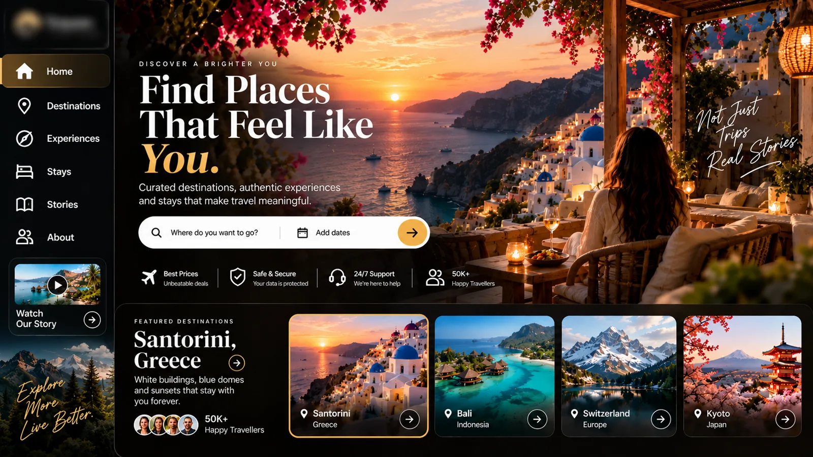

Website maintenance after launch, explained
What website and app maintenance actually involves after launch: security, updates, performance, backups and improvements, and why each matters.

Launch day is the start of a website's life, not the end of the project. Like any tool your business depends on, a website or app needs regular care to stay secure, fast and useful. Here is what that care actually involves.
Security updates
Every website is built on software: frameworks, libraries, plugins and the server underneath. Those pieces receive security fixes regularly. Applying them promptly is the single most important part of maintenance, because outdated software is the most common way sites get compromised.
Backups you can actually restore
Backups only matter if they work. Good maintenance means automatic backups of the code, the content and the database, stored somewhere separate, and occasionally tested by restoring them.
Speed and performance
Sites tend to slow down over time as images, scripts and features are added. Regular checks catch problems early: oversized images, slow pages, third-party scripts that block loading. Speed affects both how customers feel and how search engines rank you.
Monitoring
Someone should know quickly if the site goes down, a form stops sending, or a payment step fails. Monitoring turns a silent problem into a fixed one.
App store updates
Mobile apps have an extra job. New iOS and Android versions arrive every year, and the stores update their rules. Apps need to be tested and updated to keep working and to stay listed.
Content and small changes
New products, updated prices, a new team member, a seasonal banner. Maintenance should make these quick, either through an admin panel your team can use or a simple request to your development team.
Improvements
The most valuable part of maintenance is improvement. Once a site is live you have real data on what visitors do. Small, regular changes based on that data, such as a clearer button, a shorter form, a faster page, add up over time.
A simple maintenance checklist
- Software and security updates applied
- Backups running and tested
- Uptime and key forms monitored
- Page speed checked
- Broken links and errors fixed
- App versions tested on new phones and OS releases
- A short list of improvements for the next round
Kodevia looks after the websites and apps we build once they are live: security updates, fixes, speed checks and new features as your business grows. Book a free demo to talk about care for your product.
Want to talk it through for your business?
Book a free demo